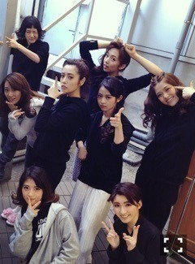
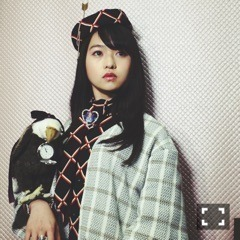

| 2016/01 24 Sun | 持ちたいもの。693回目 |
MJでポピパッパパー歌いました。
小さく三つ編みしたけど、
けっこう目立ってよかったです。
普段全然アレンジしないから新鮮だった
人に騙されず流されず生きていく
乃木坂46SHOW!は
紅白スペシャルと隙間と成人式と
盛りだくさんでした。
東京メトロ千代田線乃木坂駅の
発車メロディーが
君の名は希望になったと！
すごいー
ぜひ聴きに行きたいな〜
紅白でこの曲を歌ってから
より大事にしようと思うようになった。

二十歳まであと1ヶ月きりました∠( 'ω')／
女磨きがんばります
こないだ撮影終わりに
すべての犬は天国へ行くメンバー8人と
アンサンブルの音さんと甚古さんと
ご飯会した！！
ちょうど舞台を観に来た友人から
感想もらってたのよね。
観に行ってよかったと言ってくれました。
それにしてもみんなと集まれてよかった〜
というかよく集まったな。
話し足りないのよね〜

この時期、自分の中で
空前の太眉ブームだった
もともと太眉なのにやたら整えてた
クレメンタインは更に凛々しいんだな

NORIKO NAKAZATO主催
期間限定ショップ
「ようこそ、MITSUKOSHI宇宙支店へ〜わたしたちの未来の百貨店〜」
今度は日本橋三越です。
チラシがCAバージョンになります。
宇宙船ムービーもあります！わお！
1月27日〜2月2日
日本橋三越本店本館2階スペースにて。
またこの世界に浸かりたい気分です。
昨日今日は久しぶりに寧々と
ゆっくりできましたー！！！
一年分の話をしたけど、一年って大きい！
落ち着くのは変わらない(^.^)
明日はGUM ROCK FES.！
まりか
コメント(408)
2016/01/24 23:48